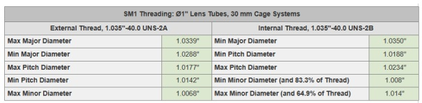
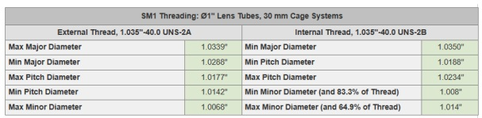

Thread 1.035"-40.0 TPI
Whether for the design of internal or external threads, 4 fundamental parameters must be taken into consideration, which are: Flanck Angle, Pitch, Major Diameter and Minor Diameter.
 

Some important definitions to consider are the following:
● Pitch: It is the distance between adjacent threads, known as thread pitch.
● Flank: The flank angle is defined as the angle that the flank forms with a line perpendicular to the axis of the screw.
● Major Diameter: It is measured from the crests of a thread
● Minor Diameter: It is measured from the valleys/root of a thread
Taking into consideration the above, both internal and external threads were designed that were compatible with optical parts that use the 1.035"-40TPI thread, using the OnShape software.
In case compatibility with the 1.035"-40TPI thread is required, you can download the models with new thread in STL format in a single zipfile file 3D Models Threads. You can also download each part with 1.035"-40TPI thread separately: adaptadorfibra-TL, anillo-TL, difusor-TL, tubo-TL, tubolente-TL.